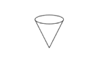
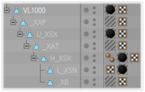
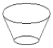
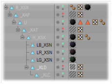

Parameter:


Similar to the rotation axes the position of the beam (cone) is marked with a square. The center of the square marks the origin of the cone (e.g. _XB).
The normals mark the direction. The position inside the fixture body can be determined with an auxiliary cone that is placed temporarily into the body.
The radius (r) of the cone can be calculated with the following formula:
r = tan([max. open radius / 2]) * [height of the cone].
Normally the cone uses the complete lens hole of the fixture. The square is placed at the top of the cone:
Cone frustum for LED spots or washes
Parameters:


At LED spots with flat housings the light beam is a cone frustum.
This needs 2 parameters (squares) for the beam
The direction of the beam is marked via the normals.
The upper square shows the _XLD square and the lower square shows the _XLC square where the beam is cut.